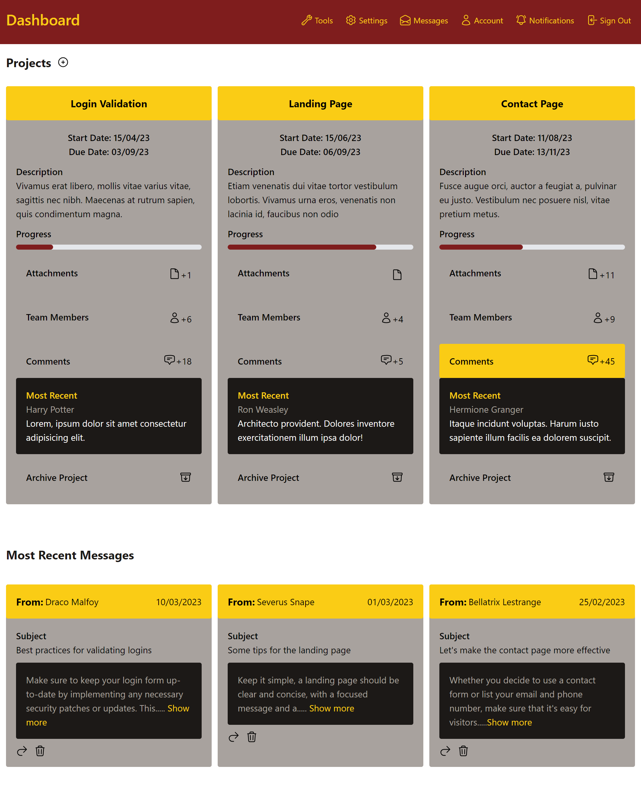

Harry Potter Tailwind Dashboard
I had the opportunity to build a responsive dashboard in the Web Design and Usability II course at NAIT using a combination of HTML, CSS, and the Tailwind framework. The purpose of this assignment was to get familiar with using Tailwind CSS to style a dashboard with contents of our choice. My main goal with this assignment was to try to keep the dashboard looking as user-friendly as possible, so I wanted to make sure my background and foreground colors had enough contrast, and all the elements had enough spacing for readability.
As a Harry Potter fan I decided to use a color palette similar to the Gryffindor house, and named the users after some characters from the series. My knowledge of HTML allowed me to build the structure quite quickly, and with the Tailwind framework being so easy to learn, it wasn't difficult to get the dashboard styled in no time. Tailwind CSS allowed me to style my site inside of my HTML file instead of physically coding inside of my external stylesheet, and that made this whole process a lot quicker and easier.
Overall this project was a positive learning experience for me, the Tailwind CSS framework proved to be quite useful and can implement all the same functionality as hardcoded CSS, including making the dashboard responsive and mobile friendly.